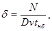

ГОСУДАРСТВЕННЫЙ КОМИТЕТ СССР ПО ДЕЛАМ СТРОИТЕЛЬСТВА
Производственные здания
промышленных предприятий
СНиП II-90-81
Москва Стройиздат 1982
Утверждены
постановлением Государственного
комитета СССР по делам строительства
от 7 декабря 1981 г. № 202
Настоящая глава разработана ЦНИИпромзданий с участием института "Промстройпроект" и НИИСФа Госстроя СССР, Гипротяжмаша Минтяжмаша, Гипромеза Минчермета СССР, Гипроцветмета, Якутниипроалмаза и института "Норильскпроект" Минцветмета СССР, Красноярского Промстройниипроекта Минтяжстроя СССР, Московского инженерно-строительного института им. В.В. Куйбышева Минвуза СССР, ВНИИПО и Высшей инженерной пожарно-технической школы МВД СССР.
С введением в действие настоящей главы утрачивает силу глава СНиП II-М.2-72* "Производственные здания промышленных предприятий. Нормы проектирования".
Для инженерно-технических работников проектных организаций.
|
Государственный комитет СССР по делам строительства (Госстрой СССР) |
Строительные нормы и правила |
СНиП II-90-81 |
|
Производственные здания промышленных предприятий |
Взамен |
1.1. Настоящие нормы должны соблюдаться при проектировании новых и реконструируемых производственных зданий промышленных предприятий*.
Настоящие нормы не распространяются на проектирование зданий для производства и хранения взрывчатых веществ и средств взрывания, а также подземных зданий и сооружений.
______________
* В дальнейшем "здания".
1.2. По взрывной, взрывопожарной и пожарной опасности производства подразделяются на категории, приведенные в табл. 1.
1.3. Категории производств по взрывной, взрывопожарной и пожарной опасности (А, Б, В, Г, Д и Е) следует принимать по нормам технологического проектирования или по перечням производств, устанавливающим эти категории, утвержденным в установленном порядке соответствующими министерствами и ведомствами.
1.4. Общая площадь здания определяется как сумма площадей всех этажей (надземных, включая технические, цокольного и подвальных), измеренных в пределах внутренних поверхностей наружных стен (или осей крайних колонн, где нет наружных стен), тоннелей, всех ярусов этажерок, площадок, рамп, галерей (горизонтальной проекции) и переходов в другие здания.
Площади технического подполья (под первым, цокольным или подвальным этажом) высотой менее 1,8 м от пола до низа плит перекрытия, над подвесными потолками, проектируемыми согласно п. 2.10, и площадок для обслуживания подкрановых путей, кранов и конвейеров в общую площадь здания не включаются.
1.5. Автоматическое пожаротушение и автоматическую пожарную сигнализацию в зданиях следует предусматривать в соответствии с перечнями зданий и помещений, подлежащих оборудованию установками автоматического пожаротушения и автоматической пожарной сигнализацией, утвержденными министерствами и ведомствами в установленном порядке.
2.1. При проектировании зданий следует:
объединять, как правило, в одном здании различные производства, складские и вспомогательные помещения, а также помещения для инженерного оборудования;
принимать количество этажей (в пределах, установленных табл. 2 настоящих норм) на основании результатов сравнения технико-экономических показателей вариантов размещения производств в зданиях различной этажности с учетом обеспечения высокого уровня архитектурных решений;
предусматривать наименьшую площадь наружных ограждающих конструкций;
принимать здания без световых проемов, если это допускается по условиям технологии, Санитарными нормами проектирования промышленных предприятий и экономически целесообразно.
|
Внесены |
Утверждены |
Срок введения в действие |
2.2. Архитектурные решения зданий следует принимать с учетом градостроительных условий и характера окружающей застройки. Цветовую отделку интерьеров зданий следует предусматривать в соответствии с Указаниями по проектированию цветовой отделки интерьеров производственных зданий промышленных предприятий, ГОСТом 14202-69 и ГОСТом 12.4.026-76*.
2.3. Геометрические параметры зданий - модульные размеры пролетов, шагов колонн и высот этажей должны соответствовать требованиям СТ СЭВ 1404-78 "Здания промышленных предприятий. Геометрические параметры", ГОСТом 23838-79 и ГОСТом 24336-80.
|
Категория производства |
Характеристика веществ и материалов, имеющихся в производстве |
|
А взрывопожароопасное |
Горючие газы с нижним концентрационным пределом взрываемости (воспламенения) 10 % и менее объема воздуха, жидкости с температурой вспышки до 28 °С включительно, если из указанных газов и жидкостей могут образоваться взрывоопасные смеси в объеме, превышающем 5% объема воздуха в помещении; вещества, способные взрываться и гореть при взаимодействии с водой, кислородом воздуха или друг с другом. |
|
Б взрывопожароопасное |
Горючие газа с нижним концентрационным пределом взрываемости более 10% объема воздуха, жидкости с температурой вспышки выше 28 до 61°С включительно, жидкости, нагретые в условиях производства до температуры вспышки и выше, горючие пыли или волокна с нижним пределом взрываемости 65 г/м3 и менее, если из указанных газов, жидкостей и пылей могут образоваться взрывоопасные смеси в объеме, превышающей 5% объема воздуха в помещении. |
|
В пожароопасное |
Жидкости с температурой вспышки выше 61 °С; горючие пыли или волокна с нижним пределом взрываемости более 65 г/м3; твердые сгораемые вещества и материалы; вещества, способные при взаимодействии с водой, воздухом или друг с другом только гореть. |
|
Г |
Несгораемые вещества и материалы в горячем, раскаленном или расплавленном состоянии, процесс обработки которых сопровождается выделением лучистого тепла, искр и пламени; твердые вещества, жидкости и газы, которые сжигаются или утилизируются в качестве топлива. |
|
Д |
Несгораемые вещества и материалы в холодном состоянии. |
|
Е взрывоопасное |
Горючие газы, не имеющие жидкой фазы, и взрывоопасные пыли в таком количестве, при котором из них могут образоваться взрывоопасные смеси в объеме, превышающем 5 % объема воздуха в помещении, и в котором по условиям технологического процесса возможен только взрыв (без последующего горения); вещества, способные взрываться (без последующего горения) при взаимодействии с водой, кислородом воздуха или друг с другом. |
2.4. Высота одноэтажных зданий (от пола до низа горизонтальных несущих конструкций на опоре) и высота этажа многоэтажных зданий (от пола лестничной площадки данного этажа до пола лестничной площадки вышележащего этажа), за исключением высоты технических этажей, должна быть не менее 3 м.
2.5. Высота помещений от пола до низа выступающих конструкций перекрытия (покрытия) должна быть не менее 2,2 м.
Высота помещений от пола до низа выступающих частей коммуникаций и оборудования в местах регулярного прохода людей и на путях эвакуации должна быть не менее 2 м, а в местах нерегулярного прохода людей - не менее 1,8 м.
2.6. Степень огнестойкости зданий, площадь этажа между противопожарными стенами и количество этажей следует принимать по табл. 2.
|
Категория |
Допустимое количество этажей |
Степень огнестойкости зданий |
Площадь этажа между противопожарными стенами, м2, зданий |
||
|
одноэтажных |
многоэтажных |
||||
|
два этажа |
три и более |
||||
|
А и Б |
6 |
I |
Не ограничивается |
||
|
А и Б (за исключением производств нефтеперерабатывающей, газовой, химической и нефтехимической промышленности) |
6 |
II |
То же |
||
|
А - производства нефтеперерабатывающей, газовой, химической и нефтехимической промышленности |
6 |
II |
Не ограничивается |
5200 |
3500 |
|
Б - производства нефтеперерабатывающей, газовой, химической и нефтехимической промышленности |
6 |
II |
Не ограничивается |
10 400 |
7800 |
|
В |
6 |
I и II |
Не ограничивается |
||
|
3 |
III |
5200 |
3500 |
2600 |
|
|
2 |
IV |
2600 |
2000 |
- |
|
|
1 |
V |
1200 |
- |
- |
|
|
Г |
10 |
I и II |
Не ограничивается |
||
|
3 |
III |
6500 |
5200 |
3500 |
|
|
2 |
IV |
3500 |
2600 |
- |
|
|
Д |
10 |
I и II |
Не ограничивается |
||
|
3 |
III |
7800 |
6500 |
3500 |
|
|
2 |
IV |
3500 |
2600 |
- |
|
|
2 |
V |
2600 |
1500 |
- |
|
|
Е |
6 |
См. примеч. 1 |
|||
|
Примечания: 1. Основные строительные конструкции (несущие стены, наружные стены из навесных панелей, стены лестничных клеток, колонны, плиты, настилы и другие несущие конструкции перекрытий и перекрытий, внутренние ненесущие стены в перегородки, лестничные площадки, косоуры, ступени, балки и марши в лестничных клетках) зданий с производствами категории Е следует проектировать из несгораемых материалов с ненормируемым пределом огнестойкости. 2. При оборудовании всех помещений установками автоматического пожаротушения площадь этажа между противопожарными стенами допускается увеличивать на 100%. 3ю Площадь этажа между противопожарными стенами одноэтажных зданий II степени огнестойкости шириной более 60 м, не имеющих светоаэрационных или аэрационных фонарей, следует принимать не более: 10 000 м2 в зданиях с производствами категории А, 15 000 м2 - в зданиях с производствами категории Б, 25 000 м2 - в зданиях с производствами категории В. Площадь этажа между противопожарными стенами многоэтажных зданий II степени огнестойкости шириной более 60 м с производствами категории В должна быть не более: 18 000 м2 в двухэтажных зданиях, 12 5000 м2 - в трехэтажных зданиях и выше. 4. Площадь этажа между противопожарными стенами одноэтажных зданий II степени огнестойкости с основными деревянными конструкциями (колонны, наружные стены из навесных панелей, плиты, настилы, прогоны, балки, фермы, арки, рамы, внутренние ненесущие стены и перегородки) должна быть не более: 15 000 м2 - в зданиях с производствами категории В, 20 000 м2 - в зданиях с производствами категории Г. 5. Площадь первого этажа между противопожарными стенами многоэтажного здания допускается принимать по норме для одноэтажного здания, при этом перекрытие над первым этажом следует проектировать без проемов с пределом огнестойкости 2,5 ч. 6. Площадь этажа между противопожарными стенами зданий II степени огнестойкости, в которых предусматривается размещение деревообрабатывающих производств, следует принимать: одноэтажного здания - без ограничения, двухэтажного - не более 7800 м2, трехэтажного и выше - не более 5200 м2. 7. Лесопильные цехи с количеством рам до четырех включительно, деревообрабатывающие цехи первичной обработки древесины и рубильные станции дробления древесины допускается размещать в двухэтажных зданиях V степени огнестойкости. 8. Производства категории Б мукомольно-крупяной и комбикормовой промышленности допускается размещать в зданиях I и II степени огнестойкости с количеством этажей до 8 включительно. 9. Допускаемое количество этажей в таблице установлено Допустимое количество этажей в таблице установлено для зданий с производствами одной категории. При размещении в здании производств различных категорий допустимое количество этажей (но во всех случаях не более 10) определяется в технологической части проекта в зависимости от размещения и площади помещений с взрывоопасными, взрывопожароопасными или пожароопасными производствами. Взрывоопасные, взрывопожароопасные или пожароопасные производства следует, если это допускается требованиями технологии, размещать у наружных стен и в многоэтажных зданиях - на верхних этажах. Размещение производств категорий А, Б и Е, производств и складов целлулоида и поролона в подвальных и цокольных этажах не допускается. |
|||||
одноэтажных зданий категорий А и Б - не более 3500 м2, категории В - не более 25000 м2, категорий Г, Д и Е - без ограничения;
двухэтажных зданий с производствами категорий А и Б - не более 2600 м2, категории В - не более 18000 м2, категорий Г, Д и Е - без ограничения;
при этом в помещениях с производствами категорий А, Б и В следует предусматривать установки автоматического пожаротушения.
Примечание. Помещения с производствами категории В допускается проектировать без установок автоматического пожаротушения при площади этажа между противопожарными стенами не более 2600 м2 в одноэтажных зданиях и 2000 м2 в двухэтажных зданиях.
(п.2.6а введен дополнительно, изменение утв. постановлением Госстроя СССР от 30 ноября 1982 г. № 286).
2.7. При размещении производств различных категорий в одном здании или помещении следует предусматривать мероприятия по предупреждению взрыва и распространения пожара (исключение возможности образования взрывоопасной и горючей среды, источников инициирования взрыва или зажигания, герметизацию производственного оборудования, применение местных отсосов и аварийной вентиляции, выполнение взрыво- и пожароопасных работ в защитных кабинах или изолированных камерах, применение автоматического пожаротушения, быстродействующих огнепреградителей и отсечных клапанов, контроль воздушной среды и др.). Эффективность этих мероприятий должна быть обоснована в технологической части проекта. Если указанные мероприятия являются в отдельных случаях недостаточно эффективными, то производства различных категорий следует размещать в отдельных помещениях.
В случае размещения производств категорий А, Б и В в отдельных помещениях зданий I и II степени огнестойкости, их следует отделять от других помещений и коридоров противопожарными перегородками. Перегородки, отделяющие помещения с производствами категорий А, Б и Е, должны быть пылегазонепроницаемыми.
В местах проемов во внутренних стенах и в перегородках, отделяющих помещения с производствами категорий А, Б и Е от других помещений, коридора и лестничной клетки, следует предусматривать тамбур-шлюзы с постоянным подпором воздуха 20 Па (2 кгс/см2). Двери тамбур-шлюзов в помещениях с производствами категорий А, Б и В должны быть противопожарными; в помещениях с производствами категорий Г, Д и Е, а также в лестничной клетке и в коридоре допускаются неостекленные двери из сгораемых материалов.
Примечание. Устройство перегородок в помещении с производствами одной категории, а также тамбур-шлюзов в местах проемов в этих перегородках должно быть обосновано в технологической части проекта.
2.8. При проектировании в противопожарных стенах проемов, которые не могут закрываться противопожарными дверями или воротами, для сообщения между смежными помещениями с производствами категорий В, Г и Д в местах этих проемов следует предусматриватьоткрытые (без дверей и ворот) тамбуры длиной не менее 4 м, оборудованные установками автоматического пожаротушения с объемным расходом воды 1 л/с на 1 м2 пола тамбура. Ограждающие конструкции тамбура (перегородки и перекрытие) должны быть противопожарными.
Если противопожарные стены с проемами отделяют помещения с производствами категорий А, Б и Е от других помещений, то в иестах проемов в этих стенах необходимо предусматривать тамбур-шлюзы согласно п. 2.7.
2.9. В помещениях без светоаэрационных и аэрационных фонарей, в которых предусматривается размещение производств категорий А, Б и В, должны быть дымовые вытяжные шахты из несгораемых материалов с клапанами с автоматическим и ручным (с уровня пола) открыванием при пожаре. Площадь поперечного сечения этих шахт следует определять расчетом, а при отсутствии расчетных данных принимать не менее 0,2% площади помещения. Шахты следует размещать равномерно (одна шахта на каждые 1000 м2 площади помещения).
В помещениях с производствами категорий Г и Д, размещаемых в одноэтажных и двухэтажных зданиях без светоаэрационных и аэрационных фонарей с покрытием из стального профилированного настила с утеплителем из сгораемых материалов, следует также предусматривать дымовые вытяжные шахты.
В многоэтажных зданиях высотой более 30 м (от планировочной отметки земли до отметки чистого пола верхнего этажа) следует предусматривать в коридорах дымовые вытяжные шахты с клапанами с автоматическим и ручным открыванием на каждом этаже. Коридоры следует разделять через каждые 60 м перегородками с самозакрывающимися дверями.
Примечания: 1. Требования настоящего пункта не распространяются на помещения и части помещений, непосредственно примыкающие к наружным стенам с открывающимися окнами, шириной (считая от стены) не более 30 м.
2. Дымовые вытяжные шахты допускается использовать в качестве вытяжных вентиляционных шахт.
2.10. Подвесные потолки допускается проектировать в соответствии с технологической частью проекта над помещениями с производствами категорий В, Г и Д для размещения в пространстве над ними коммуникаций - воздуховодов, трубопроводов и электропроводок, подвешенных к покрытиям и перекрытиям. Конструкции потолков должны быть облегченного типа и не воспринимать нагрузки от коммуникаций. Пространство над подвесными потолками не предназначается для постоянного пребывания людей; для доступа к указанным коммуникациям допускается проектировать люки и лестницы, расположенные на расстоянии друг от друга не более 100 м. В пространстве над подвесными потолками допускается предусматривать настил для прохода, рассчитываемый на нормативную сосредоточенную нагрузку 1000 Н (100 кгс); в этом случае высота прохода над настилом должна быть не менее 1,8 м; при отсутствии настила для прохода высота пространства над подвесным потолком определяется в зависимости от размеров размещаемых конструкций.
В зданиях с покрытиями из стального профилированного настила с рулонной или мастичной кровлей заполнение каркаса подвесных потолков и изоляция трубопроводов и воздуховодов, расположенных над подвесными потолками, должны выполняться из несгораемых материалов. В зданиях с другими покрытиями заполнение каркаса подвесных потолков допускается из трудносгораемых материалов.
Над подвесными потолками не допускается размещать трубопроводы с легковоспламеняющимися и горючими жидкостями и горючими газами.
2.11. Ввод железнодорожных путей в здания допускается предусматривать в соответствии с технологической частью проекта. При этом не следует предусматривать въезд локомотивов всех типов в помещения с производствами категорий А, Б и Е, а паровозов и тепловозов также в помещения с производствами категории В и в помещения с конструкциями покрытий или перекрытий из сгораемых материалов.
2.12. Верх головок рельсов железнодорожных путей должен быть на отметке чистого пола.
2.13. Грузовые платформы (рампы) производственных зданий следует проектировать в соответствии с главой СНиП по проектированию складских зданий и сооружений общего назначения.
2.14. В многоэтажных зданиях при разности отметок чистого пола верхнего (не считая технического) и первого этажей более 15 м следует предусматривать пассажирские лифты. Грузовые лифты должны предусматриваться в соответствии с технологической частью проекта.
Количество и грузоподъемность лифтов следует принимать в зависимости от пассажиро- и грузопотоков. При количестве работающих (в наиболее многочисленную смену) не более 30 человек на всех этажах, расположенных выше указанных 15 м, в здании допускается предусматривать один лифт.
Выходы из лифтов в помещениях с производствами категорий А, Б и Е на всех этажах, а также в помещениях с производствами категории В в подвальном этаже следует предусматривать через тамбур-шлюзы с постоянным подпором воздуха 20 Па (2 кгс/см2).
Двери шахт лифтов в помещениях с производствами категории В должны быть противопожарными.
2.15. В зданиях высотой от планировочной отметки земли до отметки чистого пола верхнего этажа более 30 м лифтовые холлы должны быть отделены от других помещений противопожарными перегородками и противопожарными дверями, а в шахтах лифтов при отсутствии на выходе из них тамбур-шлюзов должен обеспечиваться во время пожара подпор воздуха 20 Па (2 кгс/см2) на уровне первого этажа при одной открытой двери.
2.16. Эвакуационные выходы для людей не допускается предусматривать через помещения с производствами категорий А, Б и Е, а также через помещения в зданиях IV и V степени огнестойкости.
Допускается предусматривать один из эвакуационных выходов через помещения с производствами категорий А, Б и Е из помещений, связанных с этими производствами (для размещения вентиляционного оборудования, насосов) и в которых исключено постоянное пребывание людей.
Эвакуационные выходы из лестничных клеток, расположенных во встройках и вставках высотой не более 4-х этажей с производствами категорий Г и Д, допускается предусматривать через помещения с производствами указанных категорий при условии расположения выходов с двух сторон встроек и вставок.
Эвакуационные выходы из помещений, расположенных на антресолях и вставках (встройках) в одноэтажных зданиях I и II степени огнестойкости и предназначенных для размещения инженерного оборудования, при отсутствии в них постоянных рабочих мест допускается предусматривать на внутренние открытые стальные лестницы, размещенные в помещениях с производствами категорий Г и Д и проектируемые согласно п. 2.52. При этом расстояние от наиболее удаленной точки помещений с инженерным оборудованием до эвакуационного выхода из здания не должно превышать значений, установленных в табл. 3 (с учетом длины пути по лестнице). Допускается предусматривать один выход (без устройства второго) на внутреннюю открытую стальную лестницу из указанных помещений, если расстояние от наиболее удаленной точки помещения до выхода на лестницу не превышает 25 м.
(Измененная редакция, изменение утв. постановлением Госстроя СССР от 4 января 1985 г. № 2).
2.17. Ворота для железнодорожного подвижного состава не допускается учитывать при расчете эвакуационных выходов.
2.18. Допускается проектировать один эвакуационный выход:
с любого этажа (кроме первого) в зданиях I и II степени огнестойкости с количеством надземных этажей не более 4-х, с производством категории Г и Д и числом работающих в наибольшую смену на каждом этаже не более 5, при площади этажа не более 300 кв. м;
из помещения, расположенного на любом этаже (за исключением подвального и цокольного), если расстояние от наиболее удаленного рабочего места до этого выхода не превышает 25 м и количество работающих в смене не более:
5 чел. - в помещении с производствами категорий А и Б;
25 чел. - в помещении с производством категории В;
50 чел. - в помещении с производствами категорий Г и Д;
из помещения с числом работающих в наибольшей смене не более 5, расположенного на любом этаже (кроме первого) на наружную стальную лестницу, отвечающую требованиям п. 2.52, при этом расстояние от наиболее удаленного рабочего места до выхода на лестницу не должно превышать 25 м.
(Измененная редакция, изменение утв. постановлением Госстроя СССР от 4 января 1985 г. № 2).
2.19. В качестве второго выхода с этажей зданий допускается предусматривать наружную стальную лестницу, отвечающую требованиям п. 2.52. При этом количестве работающих на каждом этаже (кроме первого) в наиболее многочисленной смене должно быть не более:
15 чел. - в многоэтажных зданиях с производствами любой категории;
50 чел. - в двухэтажных зданиях с производством категории В;
100 чел. - в двухэтажных зданиях с производством категории Г и Д.
(Измененная редакция, изменение утв. постановлением Госстроя СССР от 4 января 1985 г. № 2).
2.20. Расстояние от наиболее удаленного рабочего места до ближайшего эвакуационного выхода из помещений наружу или в лестничную клетку следует принимать по табл. 3.
|
Объем помещения, тыс. м3 |
Категория производства |
Степень огнестойкости здания |
Расстояние, м, при плотности людского потока в общем проходе, чел/м2 |
||
|
до 1 |
св. 1 |
св. 3 |
|||
|
15 |
А, Б и Е* В |
I, II I, II, III IV V |
40 100 70 50 |
25 60 40 30 |
15 40 30 20 |
|
30 |
А, Б и Е* В |
I, II I, II, III IV |
60 160 110 |
35 95 65 |
25 65 45 |
|
40 |
А, Б и Е* В |
I, II I, II, III IV |
80 160 110 |
50 95 65 |
35 65 45 |
|
50 |
А, Б и Е* В |
I, II I, II, III |
120 200 |
70 120 |
50 85 |
|
60 и более |
А, Б и Е* В |
I, II I, II, III |
140 240 |
85 140 |
60 100 |
|
Независимо от объема |
Г и Д |
I, II, III |
Не ограничивается |
||
|
IV V |
160 120 |
95 70 |
65 50 |
||
|
* См. примеч. 1 к табл. 2. Примечания: 1. Плотность людского потока определяется как отношение количества людей, эвакуирующихся по общему проходу, к площади этого прохода. 2. Расстояния для производств категорий А и Б установлены с учетом площади разлива легковоспламеняющихся или горючих жидкостей, равной 50 м2; при других числовых значениях площади разлива следует руководствоваться указаниями главы СНиП по противопожарным нормам проектирования зданий и сооружений. 3. При промежуточных значениях объема помещений расстояния определяются по таблице интерполяцией. 4. Расстояния установлены для помещений высотой до 6 м (для одноэтажных зданий высота принимается до низа ферм); при высоте помещений более 6 м расстояния увеличиваются; при высоте помещений 12 м - на 20%, 18 - на 30% и 24 м - на 40%; при промежуточных значениях высоты помещений увеличение расстояний определяется интерполяцией. 5. Расстояние от наиболее удаленного рабочего места на площадках и этажерках до ближайшего эвакуационного выхода из помещений следует принимать с учетом длины пути по лестнице с площадки и этажерки. 6. Длина и ширина эвакуационных путей и выходов для людей, эвакуирующихся из помещений площадью не более 1000 м2 через коридор, определяется согласно пп. 2.22 и 2.23. |
|||||
2.20а. Расстояние от наиболее удаленного рабочего места до ближайшего эвакуационного выхода из одноэтажных или двухэтажных зданий с незащищенными несущими стальными конструкциями и ограждающими конструкциями (стены и покрытия) из стальных профилированных или асбестоцементных листов с полимерными утеплителями следует принимать не более:
в одноэтажных зданиях с производствами категорий А и Б - 40 м, категории В - 50 м, категорий Г и Д - 80 м и категории Е - 60 м;
в двухэтажных зданиях с производствами категорий А и Б - 30 м, категории В - 40 м, категорий Г и Д - 60 м и категории Е - 40 м.
Примечания. 1. В одноэтажных зданиях с производствами категорий В, Г и Д при невозможности соблюдения указанных расстояний эвакуационные выходы необходимо располагать по периметру этих зданий через 72 м.
2. Указанные расстояния допускается увеличивать на 50 %, если площадь не занятого оборудованием пола в помещении на одного работающего в наиболее многочисленной смене составляет 75 м2 и более.
3. Ширина марша лестницы в зависимости от количества людей, эвакуирующихся по ней со второго этажа, а также ширина дверей, коридоров или проходов на путях эвакуации должна приниматься из расчета 0,6 м на 100 чел.
(п.2.20а введен дополнительно, изменение утв. постановлением Госстроя СССР от 30 ноября 1982 г. № 286).
2.21. Ширину эвакуационного выхода (двери) из помещений следует принимать в зависимости от общего количества людей, эвакуирующихся через этот выход, и количества людей на 1 м ширины выхода (двери), установленного табл. 4.
|
Объем помещения, |
Категория производства |
Степень огнестойкости здания |
Количество людей на 1 м ширины эвакуационного выхода (двери) |
|
15 |
А, Б и Е* В |
I, II I, II, III IV V |
45 110 75 55 |
|
30 |
А, Б и Е* В |
I, II I, II, III IV |
65 175 120 |
|
40 |
А, Б и Е* В |
I, II I, II, III IV |
85 175 120 |
|
50 |
А, Б и Е* В |
I, II I, II, III |
130 220 |
|
60 и более |
А, Б и Е* В |
I, II I, II, III |
150 260 |
|
Независимо от объема |
Г и Д |
I, II, III IV V |
260 180 130 |
|
Примечания: 1. Количество людей на 1 м ширины выхода при промежуточных значениях объема помещений определяется интерполяцией. 2. Количество людей на 1 м ширины эвакуационного выхода (двери) из помещения высотой более 6 м увеличивается: при высоте помещения 12 м - на 20%, 18 м - на 30% и 24 м - на 40%; при промежуточных значениях высоты помещений увеличение количества людей на 1 м ширины выхода определяется интерполяцией. |
|||
2.22. Расстояние по коридору от двери наиболее удаленного помещения площадью не более 1000 м2 до выхода наружу или в ближайшую лестничную клетку следует принимать по табл. 5.
|
Расположение выхода |
Категория производства |
Степень огнестойкости здания |
Расстояние по коридору, м, до выхода наружу или в ближайшую лестничную клетку при плотности людского потока в коридоре, чел/м2 |
|||
|
до 2 |
св. 2 |
св. 3 |
св. 4 |
|||
|
Между двумя выходами наружу или лестничными клетками |
А, Б и Е* |
I, II |
60 |
50 |
40 |
35 |
|
В |
I, II, III IV V |
120 85 60 |
95 65 50 |
80 55 40 |
65 45 35 |
|
|
Г и Д |
I, II, III IV V |
180 125 90 |
140 100 70 |
120 85 60 |
100 70 50 |
|
|
В тупиковый коридор |
Независимо от категории производства |
I, II, III |
30 |
25 |
20 |
15 |
|
IV V |
20 15 |
15 10 |
15 10 |
10 8 |
||
|
* См. примеч. 1 к табл. 2. Примечания: 1. Плотность людского потока в коридоре определяется как отношение количества людей, эвакуирующихся из помещений в коридор, к площади этого коридора; при этом расчетная ширина коридора принимается в соответствии с главой СНиП по противопожарным нормам проектирования зданий и сооружений. 2. Расстояние от наиболее удаленного рабочего места до ближайшего эвакуационного выхода из помещения площадью до 1000 м2 в коридор следует определять по табл. 3. Указанное расстояние не определяется для помещений, в которых количество людей на один эвакуационных выход не превышает 50 человек, а расстояние от наиболее удаленного рабочего места до ближайшего эвакуационного выхода не превышает 25 м. 3. При размещении на одном этаже помещений с производствами различных категорий расстояние по коридору от двери наиболее удаленного помещения до выхода наружу или в ближайшую лестничную клетку следует определять по более опасной категории. |
||||||
(Измененная редакция, изменение утв. постановлением Госстроя СССР от 4 января 1985 г. № 2).
2.23. Ширину эвакуационного выхода (двери) из коридора наружу или в лестничную клетку следует принимать в зависимости от общего количества людей, эвакуирующихся через этот выход, и количества людей на 1 м ширины выхода (двери), установленного табл. 6.
2.24. Для помещений объемом более 60 тыс. м3 размеры эвакуационных путей и выходов допускается определять в соответствии с главой СНиП по противопожарным нормам проектирования зданий и сооружений.
2.25. Ширину марша лестницы (d) следует определять по формуле

где N - количество эвакуирующихся по лестнице людей, чел.;
D - плотность людского потока на лестнице, принимаемая равной 9 чел/м2;
v - скорость движения по лестнице вниз при указанной плотности людского потока, принимаемая равной 8 м/мин;
tнб - необходимое время эвакуации людей по лестнице, мин, определяемое по прил. 1 к главе СНиП по противопожарным нормам проектирования зданий и сооружений.
Ширина марша лестницы должна быть не менее ширины эвакуационного выхода (двери) в лестничную клетку и не менее 1 м, а ширина наружной двери лестничной клетки - не менее ширины марша.
Ширину проходов и лестниц к одиночным рабочим местам допускается принимать 0,7 м, а для эвакуации не более 50 чел. - 0,9 м.
2.26. В зданиях с производствами А, Б и Е следует предусматривать незадымляемые лестничные клетки со входами через тамбур-шлюзы, в которых должен обеспечиваться постоянный подпор воздуха 20 Па (2 кгс/м2). В указанных зданиях допускается предусматривать закрытые лестничные клетки с естественным освещением через окна в наружных стенах, если выходы из помещений предусматриваются в коридор через тамбур-шлюзы.
2.27. В зданиях с производствами категории В высотой до 30 м от планировочной отметки земли до отметки чистого пола верхнего этажа следует предусматривать закрытые лестничные клетки с естественным освещением через окна в наружных стенах; допускается в этих зданиях предусматривать внутренние незадымляемые лестничные клетки с подпором воздуха во время пожара 20 Па (2 кгс/м2) на уровне первого этажа при одной открытой двери. В указанных зданиях высотой более 30 м следует предусматривать незадымляемые лестничные клетки с подпором воздуха во время пожара 20 Па (2 кгс/м2) на уровне первого этажа при одной открытой двери.
|
Категория производства |
Степень огнестойкости здания |
Количество людей на 1 м ширины эвакуационного выхода (двери) из коридора |
|
А, Б и Е* |
I, II |
85 |
|
В |
I, II, III IV V |
175 120 85 |
|
Г и Д |
I, II, III IV V |
260 180 130 |
|
* См. примеч. 1 к табл. 2. |
||
2.28. В зданиях с производствами категорий Г и Д следует предусматривать закрытые лестничные клетки с естественным освещением через окна в наружных стенах.
В указанных зданиях высотой более 30 м от планировочной отметки земли до отметки чистого пола верхнего этажа эти лестничные клетки должны разделяться на высоту одного этажа противопожарной перегородкой через каждые 20 м по высоте; при этом двери лестничных клеток должны быть самозакрывающимися с уплотненными притворами и выполняться из несгораемых или трудносгораемых материалов.
Допускается в зданиях с производствами категорий Г и Д предусматривать внутренние незадымляемые лестничные клетки с подпором воздуха во время пожара 20 Па (2 кгс/м2) на уровне первого этажа при одной открытой двери.
2.29. Незадымляемые лестничные клетки с подпором воздуха должны разделяться на высоту одного этажа противопожарной перегородкой через каждые 30 м по высоте и иметь эвакуационное освещение.
2.30. Допускается проектировать внутреннюю открытую лестницу (без лестничной клетки) из вестибюля до второго этажа зданий I и II степени огнестойкости.
2.31. Вестибюль должен отделяться от коридоров и помещений противопожарными перегородками и самозакрывающимися дверями с уплотненными притворами.
2.32. Ширину тамбуров и тамбур-шлюзов следует принимать более ширины проемов на 0,5 м (по 0,25 м с каждой стороны проема), а глубину - более ширины дверного или воротного полотна на 0,2 м, но не менее 1,2 м.
2.33. При проектировании зданий следует принимать, как правило, типовые конструкции и изделия.
2.34. В зданиях и помещениях с производствами категорий А, Б и Е следует предусматривать наружные легкосбрасываемые ограждающие конструкции площадью, принимаемой в соответствии с Инструкцией по определению площади легкосбрасываемых конструкций, а при отсутствии расчетных данных - не менее 0,05 м2 на 1 м3 объема помещений с производствами категорий А и Е и не менее 0,03 м2 на 1 м3 объема помещений с производствами категории Б.
Примечания: 1. К легкосбрасываемым ограждающим конструкциям относится оконное стекло толщиной 3, 4 и 5 мм площадью не менее соответственно 0,8; 1 и 1,5м2.
2. Для легкосбрасываемых конструкций покрытия поверхностная нагрузка (включая их собственный вес, а также постоянную и временную длительную нагрузки) должна быть не более 1,2 кПа (120 кгс/м2).
2.35. Галереи и лестницы для обслуживания грузоподъемных кранов следует проектировать в соответствии с Правилами устройства и безопасной эксплуатации грузоподъемных кранов, утвержденными Госгортехнадзором СССР.
Площадки и мостики для обслуживания светильников предусматриваются в соответствии с Техническими правилами по экономному расходованию основных строительных материалов.
2.36. Отапливаемые здания, как правило, следует проектировать с внутренними водостоками. Допускается проектировать отапливаемые здания высотой не более 10 м без внутренних водостоков при ширине покрытия (с уклоном в одну сторону) не более 36 м.
2.37. Неотапливаемые здания следует проектировать без внутренних водостоков. Допускается многопролетные неотапливаемые здания проектировать с внутренними водостоками при наличии производственных тепловыделений, обеспечивающих положительную температуру внутри здания, или при условии обоснованного применения специального обогрева водосточных воронок, стояков и отводных труб.
2.38. По периметру наружных стен зданий без внутренних водостоков высотой до верха карниза более 10 м следует предусматривать устройство на кровле решетчатого ограждения высотой 0,6 м из несгораемых материалов.
(Измененная редакция, изменение утв. постановлением Госстроя СССР от 4 января 1985 г. № 2).
2.39. Для зданий и помещений с сухим или нормальным влажностным режимом и незначительными избытками явного тепла (до 23 Вт/м3) следует применять, как правило, зенитные фонари. Светоаэрационные фонари допускается применять в зданиях с избытками явного тепла от 23 до 50 Вт/м3 при отсутствии в помещении выделений пыли, копоти и газов.
В зданиях, производственные процессы в которых сопровождаются избытками явного тепла более 50 Вт/м3 и большими выделениями пыли, копоти и газов, следует предусматривать функциональное разделение проемов на световые и аэрационные.
(Измененная редакция, изменение утв. постановлением Госстроя СССР от 4 января 1985 г. № 2).
2.40. Зенитные фонари со светопрозрачным заполнением из полимерных материалов (органического стекла, полиэфирных стеклопластиков и др.) допускается применять только в зданиях не ниже II степени огнестойкости с производствами категорий Г и Д, покрытиями с несгораемым или трудносгораемым утеплителем и рулонной или мастичной кровлей с защитным слоем из гравия. Общая площадь проемов таких фонарей должна быть не более 15 % площади покрытия, а площадь проема одного фонаря - не более 12 м2 Расстояние между указанными зенитными фонарями должно быть не менее 4 м, от фонарей до противопожарных стен - не менее 5 м, между группами фонарей - не менее 6 м через каждые 54 м.
2.41. Светоаэрационные и аэрационные П-образные фонари следует проектировать длиной не более 120 м. Расстояние между торцами фонарей и между торцом фонаря и наружной стеной должно быть равным или кратным шагу стропильных конструкций.
В светоаэрационных П-образных фонарях следует предусматривать ветрозащитные панели в соответствии с данными расчета естественной вентиляции (аэрации).
Открывание переплетов светоаэрационных фонарей должно быть механизированным.
(Измененная редакция, изменение утв. постановлением Госстроя СССР от 4 января 1985 г. № 2).
2.42. В зданиях, оборудованных опорными мостовыми электрическими кранами весьма тяжелого режима работы, под остекленением П-образных светоаэрационных фонарей (с оконным стеклом) следует предусматривать горизонтальную защитную металлическую сетку шириной 0,7 м. Под фонарями с армированным стеклом сетку предусматривать не следует.
2.43. Под зенитными фонарями с оконным стеклом следует предусматривать защитную металлическую сетку.
2.44. Наружные и внутренние стены отапливаемых и неотапливаемых зданий следует проектировать, как правило, сборными из панелей заводского изготовления.
2.45. Следует предусматривать уплотнение притворов и фальцев в заполнениях проемов и швов в наружных стенах.
2.46. Перегородки следует проектировать, как правило, из панелей (щитов) заводского изготовления, а также в виде каркаса, заполненного плитными или листовыми материалами.
2.47. Оконные проемы, не предназначенные для вентиляции, следует заполнять остеклёнными неоткрывающимися переплетами или профильным стеклом; для оконных проемов с двойным остеклением следует предусматривать во внутренних переплетах открывающиеся створки. Открывание переплетов, предназначенных для вентиляции (аэрации), как правило, должно быть механизированным.
Оконные проемы в закрытых лестничных клетках допускается заполнять стеклоблоками при условии устройства в этих проемах открывающихся оконных фрамуг площадью 1,2 м2.
2.48. Ворота следует принимать типовые: распашные (раскрывающиеся на одну или две стороны), откатные и подъемно-поворотные. При дистанционном и автоматическом открывании ворот должна быть обеспечена возможность открывания их во всех случаях вручную.
2.49. Уклон маршей в лестничных клетках следует принимать 1:2 при ширине проступи 0,3 м; для подвальных этажей и чердаков допускается принимать уклон маршей лестниц 1 : 1,5 при ширине проступи 0,26 м.
2.50. Открытые лестницы (при отсутствии стен лестничных клеток) должны иметь уклон 1:1. Уклон открытых лестниц (для прохода к одиночным рабочим местам) допускается увеличивать до 2:1. Для осмотра оборудования при высоте подъема не более 10 м допускается проектировать вертикальные лестницы шириной 0,6 м.
2.51. Для лестничных клеток зданий I, II и III степени огнестойкости со стальными несущими конструкциями каркаса лестничные площадки, косоуры, ступени, балки и марши, а также покрытия лестничных клеток допускается проектировать стальными, защищенными огнезащитными материалами или красками, обеспечивающими предел огнестойкости 0,75 ч.
2.52. Наружные открытые стальные лестницы, предназначенные для эвакуации людей, должны иметь уклон не более 1:1 и ширину не менее 0,7 м. Эти лестницы должны быть с площадками на уровне эвакуационных выходов и кровли и иметь ограждение. В многоэтажных зданиях с производствами категорий А, Б и В указанные лестницы, расположенные против остекленных проемов, должны иметь со стороны остекления сплошное ограждение из несгораемых материалов, выступающее за габариты лестницы на 1 м в каждую сторону.
2.53. Для зданий высотой от планировочной отметки земли до карниза или верха парапета 10 м и более следует проектировать один выход на кровлю (на каждые полные и неполные 40000 м2 кровли), в том числе:
для одноэтажных зданий без наружных эвакуационных лестниц - по наружной открытой стальной лестнице, проектируемой согласно п. 2.52;
для многоэтажных зданий - из лестничной клетки. В случаях, когда нецелесообразно иметь в пределах высоты верхнего этажа лестничную клетку для выхода на кровлю, допускается для зданий высотой от планировочной отметки земли до отметки чистого пола верхнего этажа не более 30 м проектировать наружную открытую стальную лестницу согласно п. 2.52 для выхода на кровлю из лестничной клетки через площадку этой лестницы.
Допускается не предусматривать выход на кровлю одноэтажных зданий с покрытием общей площадью не более 100 м2.
2.54. Для зданий высотой от планировочной отметки земли до верха карниза или парапета более 10 м следует проектировать наружные стальные пожарные лестницы:
вертикальные, шириной 0,6 м - при высоте зданий от 10 до 20м;
с уклоном не более 6: 1, шириной 0,7 м с площадками не реже чем через 8 м по высоте и с поручнями - при высоте зданий более 20 м.
Для зданий с перепадами высот следует предусматривать в соответствии с указанными нормами пожарные лестницы, соединяющие покрытия, расположенные на разных уровнях. Для подъема на кровлю фонарей следует предусматривать пожарную лестницу.
Расстояние между пожарными лестницами по периметру здания следует назначать не более 200 м. Допускается не предусматривать пожарные лестницы на главном фасаде здания, если ширина здания не превышает 150 м, а со стороны, противоположной главному фасаду, имеется линия противопожарного водопровода.
При определении количества и месторасположения наружных стальных пожарных лестниц следует учитывать наружные лестницы, предназначенные для эвакуации людей (п. 2.52) и наружные лестницы, предназначенные для выхода на кровлю (п. 2.53).
2.55. Для зданий и помещений с избытками явного тепла более 50 Вт/м3 следует применять, как правило, неутепленные ограждающие конструкции, предусматривая, при необходимости, обогрев зон постоянного пребывания работающих с помощью средств местного обогрева.
(Измененная редакция, изменение утв. постановлением Госстроя СССР от 4 января 1985 г. № 2).
3.1. Здания следует проектировать простой преимущественно прямоугольной формы в плане.
3.2. Помещения с мокрым влажностным режимом, как правило, не следует размещать у наружных стен здания.
3.3. Фасады зданий следует проектировать без ниш, поясков и других элементов, задерживающих атмосферные осадки.
3.4. Размещение на покрытиях зданий оборудования и коммуникаций не допускается.
3.5. Эвакуационные выходы из зданий следует размещать, как правило, в стенах, расположенных параллельно направлению преобладающих ветров (по розе ветров зимнего периода).
3.6. На входах в отапливаемые здания следует предусматривать двойные тамбуры (с тремя дверями); размеры каждого тамбура принимать согласно п. 2.32 настоящих норм, внутренний тамбур должен быть отапливаемым.
3.7. Ворота и технологические проемы в наружных стенах отапливаемых зданий должны иметь воздушно-тепловые завесы; ворота зданий с влажным или мокрым влажностным режимом помещений должны иметь воздушно-тепловые завесы и тамбуры.
3.8. При проектировании зданий на вечномерзлых грунтах следует принимать принцип I или принцип II использования вечномерзлых грунтов в качестве основания в соответствии с главой СНиП по проектированию оснований и фундаментов на вечномерзлых грунтах.
3.9. Здания (с основанием по принципу I) следует проектировать, как правило, без подвальных или цокольных этажей, тоннелей и каналов.
В соответствии с технологической частью проекта допускается проектировать отапливаемые подвальные или цокольные этажи, тоннели и каналы, при условии сохранения расчетного теплового режима грунтов основания.
3.10. При проектировании зданий (с основанием по принципу II) следует:
а) предусматривать конструктивные решения, обеспечивающие медленное и равномерное оттаивание грунтов основания в процессе строительства и эксплуатации. В случае предварительного оттаивания грунтов основания следует, при необходимости, предусматривать улучшение строительных свойств грунтов путем уплотнения, закрепления и др.;
б) назначать высоту помещений, проемов (ворот, дверей и др.), расстояния по высоте между оборудованием и конструкциями зданий и сооружений с запасами, обеспечивающими возможность нормальной эксплуатации здания в процессе осадок конструкций и сохранение требуемых нормами габаритов после окончания осадок;
в) проектировать фундаменты под оборудование и подъемно-транспортные устройства с учетом возможности приведения в проектное положение оборудования и подъемно-транспортных устройств при неравномерных осадках в процессе эксплуатации;
г) предусматривать возможность приведения в проектное положение конструкций при осадках зданий.
3.11. При проектировании зданий (с основанием по принципу I и II) печи и агрегаты, выделяющие тепло, следует размещать на перекрытиях или на отдельных фундаментах, не связанных с несущими конструкциями.
3.12. При проектировании зданий (с основанием по принципу II) в случаях, когда деформации оснований не превышают предельных величин, приведенных в главе СНиП по проектированию оснований зданий и сооружений, конструктивные схемы зданий допускается принимать без учета особенностей строительства в Северной строительно-климатической зоне.
3.13. При проектировании зданий (с основанием по принципу II) в случаях, когда деформации основания могут превышать предельные величины, приведенные в главе СНиП по проектированию оснований зданий и сооружений, конструктивные решения должны обеспечивать устойчивость, прочность и эксплуатационную пригодность зданий при неравномерных осадках основания. Для обеспечения указанных требований здания следует проектировать:
а) с жесткими конструктивными схемами, при которых конструктивные элементы не могут иметь взаимных перемещений;
б) с податливыми конструктивными схемами, при которых, возможно взаимное перемещение шарнирно-связанных между собой конструктивных элементов при обеспечении устойчивости и прочности этих элементов, а также эксплуатационной пригодности зданий.
Многоэтажные, а также одноэтажные здания с пролетами 12 м и менее следует проектировать, как правило, с жесткой конструктивной схемой, а одноэтажные здания с пролетами более 12 м (однопролетные и многопролетные) - с податливой конструктивной схемой.
3.14. Здания и сооружения большой протяженности (проектируемые с основанием по принципу II) следует, разделять осадочными швами в соответствии с табл. 7.
|
Величина средней осадки основания здания, см |
Наибольшее расстояние между осадочными швами, м |
|
|
при жесткой конструктивной схеме |
при податливой конструктивной схеме |
|
|
15-30 |
42 |
60 |
|
Более 30 |
24 |
30 |
|
Примечание. Величина средней осадки основания зданий определяется в соответствии с главой СНиП по проектированию оснований и фундаментов на вечномерзлых грунтах. Осадочные швы следует рас полагать так, чтобы эти швы, по возможности, совпадали с местами изменений литологического состава, физико-механических свойств и льдонасыщенности грунтов, с местами изменения мерзлотных свойств основания и глубины залегания верхней поверхности вечномерзлых грунтов, с местами перехода от вечномерзлого грунта к участкам с талыми грунтами. |
||
3.15. При проектировании зданий с жесткой конструктивной схемой (с основанием по принципу II), как правило, следует:
а) не допускать изломов стен в плане;
б) предусматривать внутренние стены на всю ширину или длину здания;
в) располагать поперечные несущие стены или рамы на расстоянии не более 12 м друг от друга;
г) принимать оконные проемы одинаковыми, размещая их равномерно;
д) не допускать местных ослаблений стен в результате устройства ниш, штраб, каналов и т. д.;
е) предусматривать связь сборных элементов покрытия и перекрытий между собой;
ж) применять армированные пояса, армирование простенков и углов каменных стен.
3.16. При проектировании зданий с податливой конструктивной схемой' (с основанием по принципу II), как правило, следует:
а) применять конструктивные схемы зданий с колоннами, жестко заделанными в фундаменты и шарнирно соединенными с покрытиями;
б) применять конструкции с минимально допустимой жесткостью в вертикальной плоскости;
в) проектировать покрытия и перекрытия в виде жестких горизонтальных диафрагм, связанных с продольными и поперечными стенами и колоннами;
г) назначать площади опирания и крепления элементов конструкций из условия обеспечения прочности при неравномерной осадке здания.
3.17. Устойчивость и прочность зданий, элементов и соединений с жесткой и податливой конструктивными схемами следует проверять расчетом на возможные наиболее неблагоприятные сочетания нагрузок и воздействий, включая неравномерные осадки основания.
СОДЕРЖАНИЕ
2. Объемно-планировочные и конструктивные решения
Эвакуационные выходы из зданий и помещений
3. Дополнительные нормы проектирования зданий в Северной строительно-климатической зоне